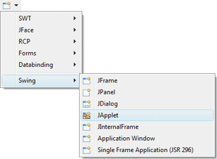
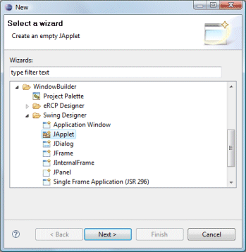
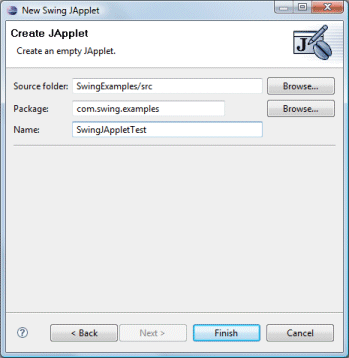

|
Subclasses of the Swing JApplet class can be
created using the Swing JApplet wizard. The wizard can be
selected from the drop down wizard menu or from the
Eclipse New wizard.
To use the wizard, select the project source folder and package to contain the class. Then enter the class name and hit the Finish button. |
|
  |
|
javax.swing.JApplet; public class SwingJAppletTest extends JApplet { public SwingJAppletTest() { } } When editing Swing JApplets, all of the standard Swing layouts, containers, widgets and menus are available. Custom or third party controls may be added via the Choose Component command. You may also preview your applet using different look and feels using the drop down look and feel list in the toolbar. |